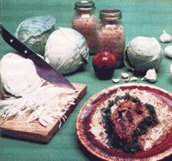

It's savory, crisp, spicy, sweet, tart, nippy, tangy, and versatile . . .
Making sauerkraut is a delicious, traditional way to preserve all that extra cabbage your garden produces... and krautmakin' is a remarkably quick and easy process, too!
As a matter of fact-when you combine shredded cabbage and salt in a nonmetal container-it's almost impossible not to make a success of this tasty staple. The two ingredients provide the necessary brine . . . and bacteria (which are naturally present on cabbage leaves) will initiate the fermentation process that allows you to store the kraut through the long winter months.
In order to start krautin', you'll need to gather up a sharp knife, a kraut (or slaw) shredder, a large pan, scales, a measuring spoon or cup, a nonmetallic vessel that's large enough to hold your cabbage supply, a pencil and a notepad, a wooden tamper or "stomper", a pressure plate (this can be a wooden disk or dinner plate) to fit inside the crock or jar, a heavy rock to weight the plate, and a thermometer to measure the air temperature. Add a nice clean work area with plenty of elbow room to cut and "stomp" . . . and you're set to go!
The only ingredients required for your homemade kraut are firm, fresh heads of cabbage and "pickling" salt . . . a flavoring which has none of the chemical additives that can affect food color and taste. (Some folks say that sea salt also works fine.)
Slice the cabbages in half and remove their hearts (save these to marinate in oil, vinegar, and spices for some delicious "refrigerator pickles" . . . a real treat!), then shred the vegetable with a slaw cutter, catching the chopped leaves in a large pan.
When all your cabbage is shredded, weigh it on the scales (taking into account the heft of the pan it's in), and record the weight of each batch before mixing the vegetable and salt in a large earthenware pot or a jar.
You'll need enough salt to equal about 2.5% of the weight of your cabbage. It's safe to figure that a 10-gallon crock will hold about 80 pounds of shredded cabbage . . . which would require two pounds of salt. In such a case, just place your cabbage in the crock in eight 10-pound layers . . . and add 1/4 pound of salt per layer. (If you're using a five-gallon container, you can cut the amounts-and layer sizes-in half.)
As each cabbage/salt level is completed, the mixture must be tamped or "stomped"-with a wooden mallet-to release the cabbage's natural juices . . . and to mix the salt with the vegetable liquid in order to form a curing brine.
When all the layers have been added and stomped, the container should be filled to within three or four inches of the top . . . and all the vegetable matter covered with brine. Then place the plate on the mixture and weight it down with a rock. (Any cabbage that's not held under the brine will soon rot.) Top the crock with a clean cloth-to keep out insects and debris-and store the vessel for the fermentation period.
Kraut will cure nicely on a warm back porch or in a cool basement . . . but the environment will influence the flavor of the finished product: A warn curing temperature will speed up the fermentation process, while a cooler area will result in a longer curing time. Short fermentation tends to produce "sweet" kraut . . . prolonged, cool pickling results in "tart"-really sour-sauerkraut.
While your kraut's fermentation is progressing, inspect the crock every day or two and skim off any mold or scum that may form on the surface of the brine. Such layers are created by airborne, yeastlike bacteria that utilize the vital lactic acid as a source of food. While harmless in itself, the mold can lower the concentration of lactic acid below the point necessary for preservation.
As the curing continues, bubbles will form and work in the brine. A cessation of this activity indicates that the pickling process has reached completion. At this point, you can serve up the first batch . . . then store the container in a much cooler place-such as a root cellar-to arrest further fermentation and keep your kraut tasty for the coming year . . . and/or preserve the kraut indefinitely by canning it. (Take care to fill the jars with additional brine when an insufficient amount remains from curing . . . then seal them, heat to boiling in a water bath, hold that temperature for 30 minutes, and retighten the lids.)
Homemade kraut is always an adventure, because no two batches of this delicacy ever turn out exactly alike. In fact, if it's consistent flavor you want, you'd better stick to the storebought variety.
Moreover, there's no "best" method for preparing this tasty dish. The advice given here will get you started with your first batch, but you might want to try a little more (or less) salt in your second recipe . . . to get the tang that's exactly to your personal liking. Experiment with a crockful that's been warm-temperature cured, and then a cool one.
Remember: Although there are scads of ways to turn out delicious sauerkraut, there're even more ways to enjoy it: hot with dumplings, baked with spare ribs, in sandwiches or soups, with hot dogs or knackwurst, boiled with dried peas, with Thanksgiving turkey or roast duck or goose ... even just eaten raw by the handful, straight from the crock.
|
 |
|
|